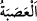
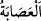

(et-Tahrîm, 66/10)” buyrulmasından maksad onlara eziyet ettiler demektir. Nûh (a.s.)’ın
hanımı onun hakkında “O bir delidir.” demiştir. Lut (a.s.)’ın karısı da (kavminin
sapıklarına) onun misâfirlerini haber vermiştir.
Nûh ve Lût (a.s.)’ın hanımlarında olduğu gibi bir peygamberin hanımının kâfir olması
câizdir, ama zinâkâr olması asla câiz değildir. Çünkü peygamber kâfirleri dîne,
söylediği hükümleri, sevap ve cezâyı kabule çağırmak için gönderilmiştir. Peygamberde
kâfirleri kendilerinden nefret ettirip uzaklaştıracak bir durum olduğunda ise bu maksad
gerçekleşmez. Küfür onlara göre nefret edilecek bir durum değildir. Zinâ ise bunun
aksinedir. Çünkü o nefret verici şeylerin en büyüğüdür.
Fahreddîn Râzî’nin Kitâbü’l-İşârât’ında zikredildiği üzere Rasûlullah (s.a.) mezkûr
iftirânın konuşulduğu günlerde vakitlerinin çoğunu evde geçirirdi. Huzûruna Ömer (r.a.)
vardı. Bu hâdise hakkında onunla istişâre etti. Ömer (r.a.): “Yâ Rasûlallah! Ben
münâfıkların yalancı olduğuna kesin olarak eminim. Âişe’nin günahsız olduğunu
sinekten anlıyorum. Çünkü sinek senin bedenine yaklaşmaz. Allah Teâlâ, senin bedenini
pisliklere bulaşması sebebiyle sineğin bile konmasından koruduğu halde nasıl olur da
âileni böyle bir kötülükten korumaz.” dedi.
Sonra O’nun huzûruna Hz. Osman vardı ve onunla istişârede bulundu. Hz. Osman:
“Yâ Rasûlallah! Âişe’nin suçsuz olduğunu senin gölgenden anladım. Çünkü ben gördüm
ki Allah senin gölgeni yere düşmekten korumuştur.” -Çünkü ayaklarla üzerine
basılmasın diye O’nun şerefli şahsının gölgesi ne güneşte ne de ay ışığında yere
düşerdi.- “Senin gölgeni koruyan Allah, nasıl ehlini/âileni korumaz?!” dedi.
Sonra Hz. Ali geldi, onunla da bu konuyu istişâre etti. Hz. Ali de şöyle dedi: “Yâ
Rasûlallah! Âişe’nin günahsız olduğunu bir şeyden anladım. O da şu: Biz peşinizde
namaz kılıyorduk. Sen de nalinlerinle namaz kıldırıyordun. Sonra nalinlerin birini
çıkardın. Biz “Bunu, bizim için sünnet olsun diye mi yaptın?” diye sorduk. Sen: “Hayır,
Cebrâil gelip şu nalinde necaset olduğunu söyledi. Ben de onu bu sebeple çıkardım.”
dedin. Senin nalininde bile necaset olmazsa, âilende nasıl olur?”
Bütün bu sözlerden dolayı Rasûlullah (s.a.) pek sevindi. Allah onların söyledikleri
sözleri doğruladı ve “bu ağır iftirâyı uyduranlar” buyurarak bu ağır iftirâyı ortaya
atanları rezil etti.
“Şüphesiz sizin içinizden bir gruptur.” “__WORD__ ve “__WORD__, ondan kırka kadar
kimseden oluşan topluluk demektir. Burada Abdullah b. Übeyy, Zeyd b. Rifâa, Mistah b.
Üsâse, Hamne binti Cahş ve onlara yardımcı olanlar kasdedilmiştir. Hassân b. Sâbit’in
onlardan olup olmadığında ihtilâf edilmiştir. Hz. Âişe (r.a.)’yı övdüğü ona nisbet edilen
şu beyitler onun böyle bir iftirâdan berî olduğuna delâlet etmektedir:
O edeblidir, Allah onun huyunu güzel kılmıştır
Onu her kötülükten ve bâtıldan arındırmıştır.
Eğer ben sizin iddiâ ettiğiniz şeyi söylediysem
Elim kolum tutmaz olsun